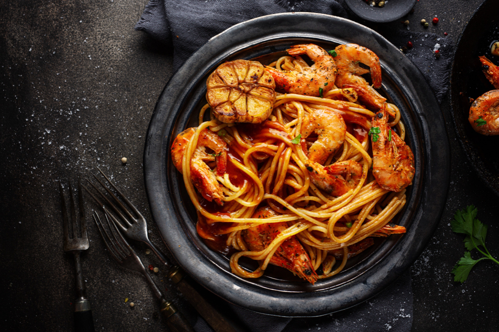

DDINE @ THE ZOO
As parents, ensuring that our children have access to nutritious snacks is essential for supporting their growth, development, and overall well-being. However, finding snacks that are both healthy and appealing to kids can sometimes be a challenge. With a little creativity and planning, though, it’s possible to offer snacks that are not only nutritious but also delicious and fun to eat. In this article, we’ll explore some healthy snack ideas for kids that are sure to please even the pickiest of eaters.